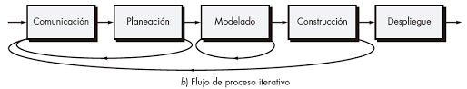

PALMERA
Preferencias
|
Cerrar sesion
Principal
Personal
Procesos
Proyectos
Medio Ambiente
Seguridad y salud
Mejora
Gestion reporte
Encuestas
Gestion documental
Auditorias
input
Mapa de procesos
input
Tipos de procesos
input
Procesos
input
Personalizados
Mapa de procesos vigentes
- Proceso de desarrollo

- Proceso estrategicos
- Proceso de soporte